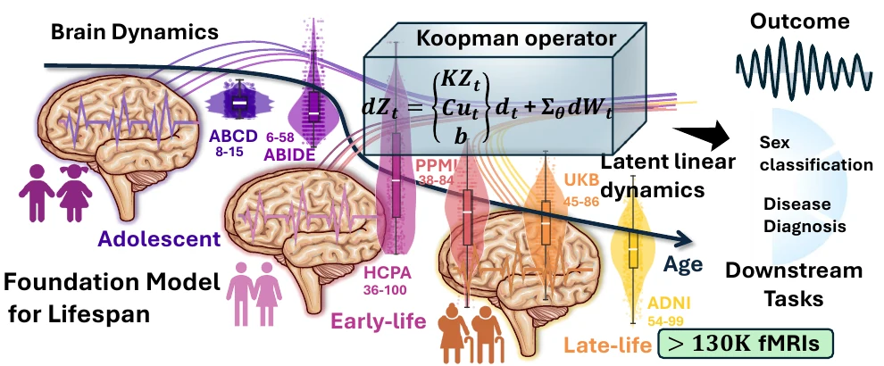
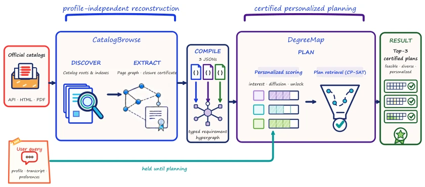
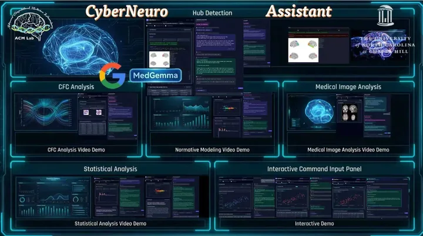

Recursive Image Editing
An image editor that learns to repair its own failed edits, using feedback from a vision-language critic, its previous attempt, and the source image.
UC San Diego senior studying Math–CS and Cognitive Science (Neural Comp & ML), graduating in December 2026.
I want to build intelligent systems that understand the world, generate possibilities, and adapt in real time—bringing understanding and generation together through continuous interaction.
Applying to graduate programs, and looking for full-time or internship roles from January to August 2027.
An image editor that learns to repair its own failed edits, using feedback from a vision-language critic, its previous attempt, and the source image.

A Koopman-structured fMRI foundation model that learns analyzable latent brain dynamics across the lifespan.

Separates curriculum extraction from personalized, constraint-aware degree planning.

Multi-agent town simulation with publish/subscribe coordination. Winner of the Multi-Agent System Challenge at SanD Hackathon 2026.
Contributor to an open-source library of language agents. Extended the ReAct agent to the TriviaQA benchmark.
A ray tracer with reflection, refraction, and soft shadows.
Open to research collaborations, full-time roles, and internships.